Change analysis for United States for PRIMAP-hist v2.6_final compared
to v2.5.1_final
Overview over
emissions by sector and gas
The following figures show the aggregate national total emissions
excluding LULUCF AR6GWP100 for the country reported priority scenario.
The dotted linesshow the v2.5.1_final data.
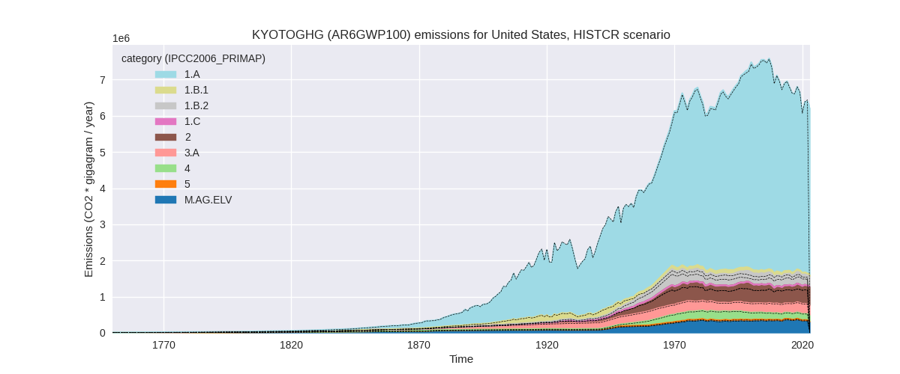
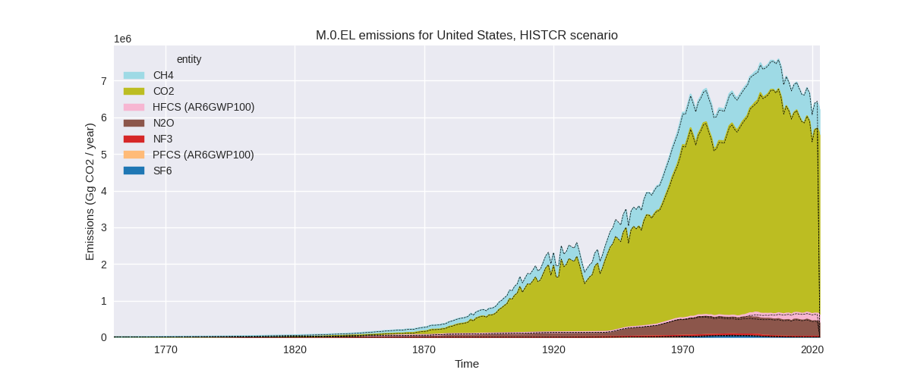
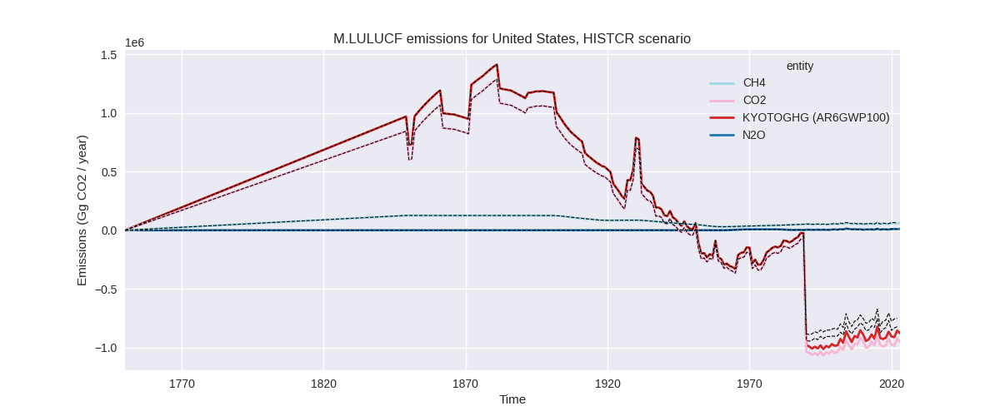
The following figures show the aggregate national total emissions
excluding LULUCF AR6GWP100 for the third party priority scenario. The
dotted linesshow the v2.5.1_final data.
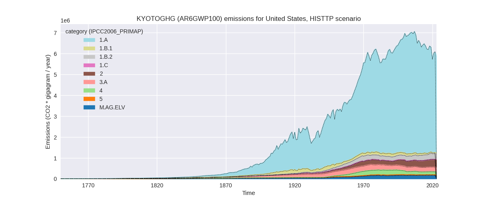
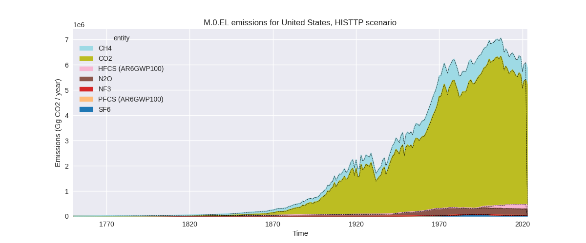
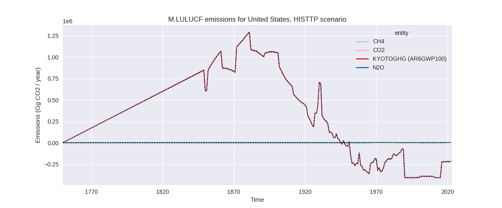
Overview over changes
In the country reported priority scenario we have the following
changes for aggregate Kyoto GHG and national total emissions excluding
LULUCF (M.0.EL):
- Emissions in 2022 have changed by -0.7%% (-44958.90 Gg CO2 / year)
- Emissions in 1990-2022 have changed by 0.3%% (19857.90 Gg CO2 / year)
In the third party priority scenario we have the following changes
for aggregate Kyoto GHG and national total emissions excluding LULUCF
(M.0.EL):
- Emissions in 2022 have changed by -0.4%% (-26122.30 Gg CO2 / year)
- Emissions in 1990-2022 have changed by 0.1%% (4088.29 Gg CO2 / year)
Most
important changes per scenario and time frame
In the country reported priority scenario the
following sector-gas combinations have the highest absolute impact on
national total KyotoGHG (AR6GWP100) emissions in 2022
(top 5):
- 1: 1.A, CO2 with -150024.00 Gg CO2 / year (-3.1%)
- 2: 2, CO2 with 102220.38 Gg CO2 / year (60.3%)
- 3: 2, HFCS (AR6GWP100) with 28453.93 Gg CO2 / year (15.3%)
- 4: 1.B.2, CH4 with -26415.33 Gg CO2 / year (-10.7%)
- 5: 4, CH4 with -4396.76 Gg CO2 / year (-3.0%)
In the country reported priority scenario the
following sector-gas combinations have the highest absolute impact on
national total KyotoGHG (AR6GWP100) emissions in
1990-2022 (top 5):
- 1: 1.A, CO2 with -126221.78 Gg CO2 / year (-2.4%)
- 2: 2, CO2 with 107133.61 Gg CO2 / year (55.9%)
- 3: 2, HFCS (AR6GWP100) with 16449.05 Gg CO2 / year (12.8%)
- 4: 2, PFCS (AR6GWP100) with 9495.02 Gg CO2 / year (91.9%)
- 5: 2, SF6 with 4730.60 Gg CO2 / year (28.1%)
In the third party priority scenario the following
sector-gas combinations have the highest absolute impact on national
total KyotoGHG (AR6GWP100) emissions in 2022 (top
5):
- 1: 1.A, CO2 with -31737.90 Gg CO2 / year (-0.7%)
- 2: 2, HFCS (AR6GWP100) with 5360.35 Gg CO2 / year (3.0%)
- 3: 4, CH4 with 4099.64 Gg CO2 / year (2.9%)
- 4: 2, SF6 with -3423.25 Gg CO2 / year (-10.2%)
- 5: 5, N2O with -2523.85 Gg CO2 / year (-13.6%)
In the third party priority scenario the following
sector-gas combinations have the highest absolute impact on national
total KyotoGHG (AR6GWP100) emissions in 1990-2022 (top
5):
- 1: 5, N2O with 3259.31 Gg CO2 / year (15.5%)
- 2: 1.A, CO2 with -1487.00 Gg CO2 / year (-0.0%)
- 3: 4, CH4 with 605.52 Gg CO2 / year (0.4%)
- 4: 2, HFCS (AR6GWP100) with 162.43 Gg CO2 / year (0.2%)
- 5: 2, N2O with 141.19 Gg CO2 / year (0.6%)
Notes on data changes
Here we list notes explaining important emissions changes for the
country. ’' means that the following text only applies to the TP time
series, while means that it only applies to the CR scenario. Otherwise
the note applies to both scenarios.
- We have added data from the official 2024 release of the US GHG
inventory.
- The USA report non-energy use of fuels under 1.A.5 in CRF. We have
mapped the non-energy use of fuels data reported in the 2024 inventory
to 2.D (Non-energy products from fuels and solvent use). Thus we have
changes for categories 1.A and 2.D which don’t affect the totals, as
emissions are moved from 1.A to 2.D (CR scenario).
- F-gas emissions estimates are higher in the 2024 inventory than in
CRF2023 data and in consequently higher in PRIMAP-hist v2.6 than in
v2.5.1 (CR scenario).
- 2022 changes in the TP scenario are due to updated 2022 data (E
I2024, and for f-gases the 2024 inventory which is used for 2022 growth
rates)
Changes by sector and gas
For each scenario and time frame the changes are displayed for all
individual sectors and all individual gases. In the sector plot we use
aggregate Kyoto GHGs in AR6GWP100. In the gas plot we usenational total
emissions without LULUCF. ## country reported scenario
2022
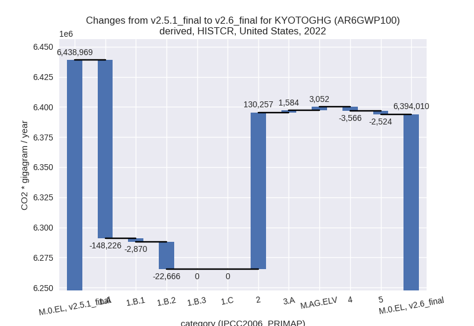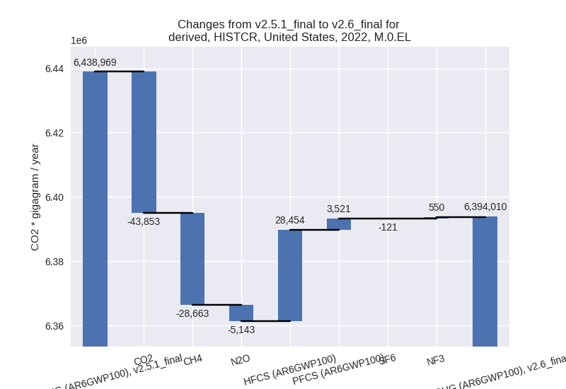
1990-2022
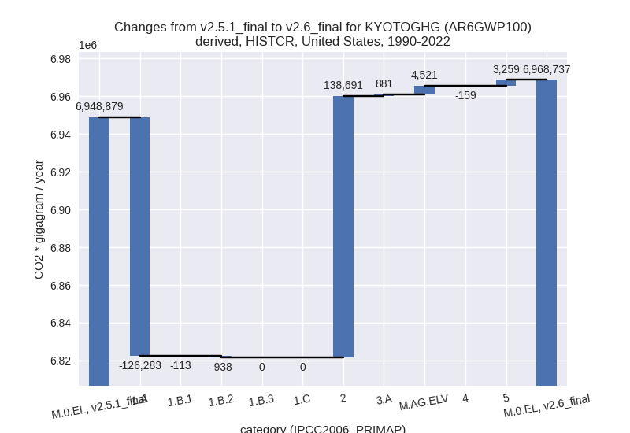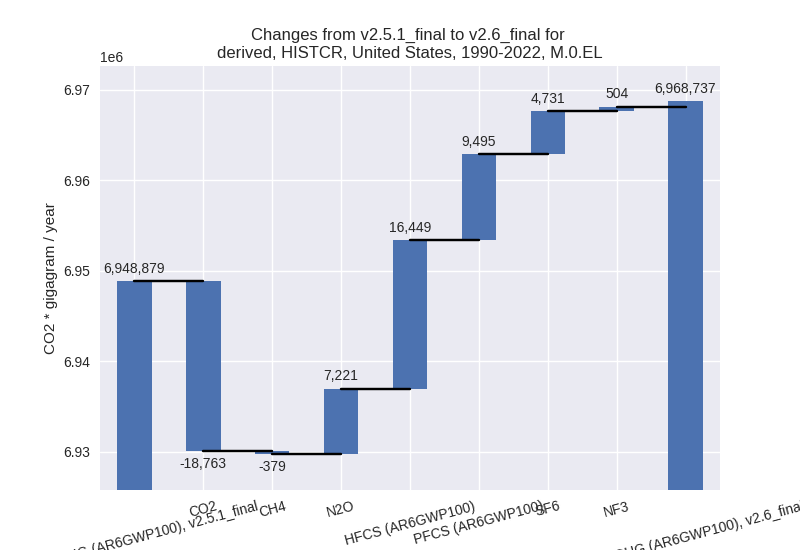
third party scenario
2022
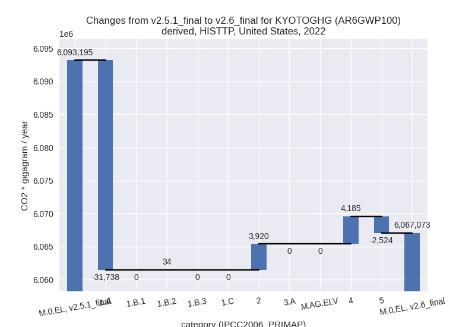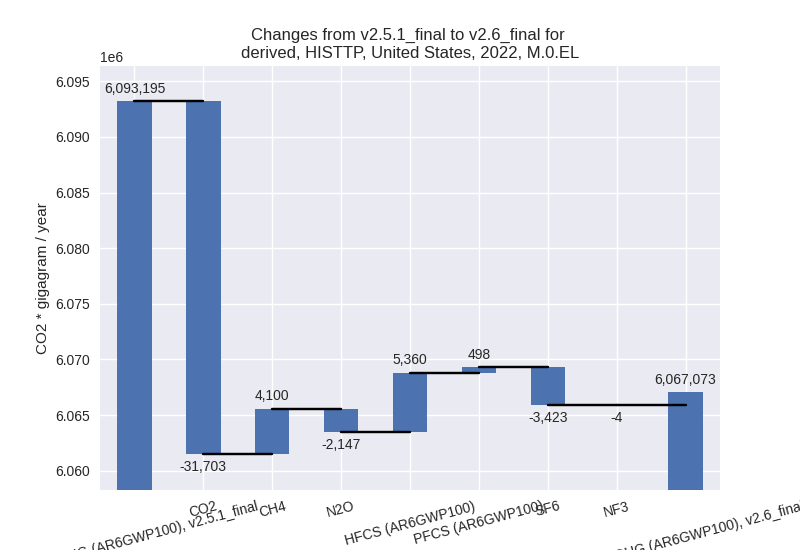
1990-2022
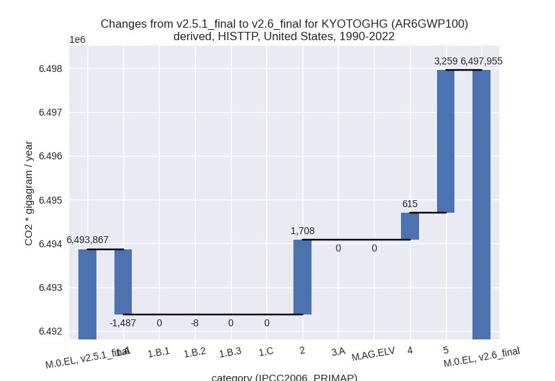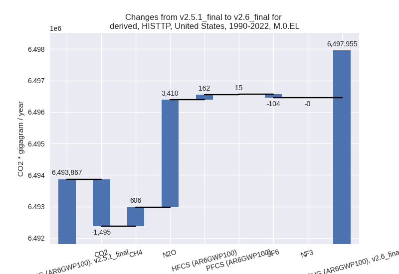
Detailed changes for the
scenarios:
country reported scenario
(HISTCR):
Most important changes
per time frame
For 2022 the following sector-gas combinations have
the highest absolute impact on national total KyotoGHG (AR6GWP100)
emissions in 2022 (top 5):
- 1: 1.A, CO2 with -150024.00 Gg CO2 / year (-3.1%)
- 2: 2, CO2 with 102220.38 Gg CO2 / year (60.3%)
- 3: 2, HFCS (AR6GWP100) with 28453.93 Gg CO2 / year (15.3%)
- 4: 1.B.2, CH4 with -26415.33 Gg CO2 / year (-10.7%)
- 5: 4, CH4 with -4396.76 Gg CO2 / year (-3.0%)
For 1990-2022 the following sector-gas combinations
have the highest absolute impact on national total KyotoGHG (AR6GWP100)
emissions in 1990-2022 (top 5):
- 1: 1.A, CO2 with -126221.78 Gg CO2 / year (-2.4%)
- 2: 2, CO2 with 107133.61 Gg CO2 / year (55.9%)
- 3: 2, HFCS (AR6GWP100) with 16449.05 Gg CO2 / year (12.8%)
- 4: 2, PFCS (AR6GWP100) with 9495.02 Gg CO2 / year (91.9%)
- 5: 2, SF6 with 4730.60 Gg CO2 / year (28.1%)
Changes in the main sectors for aggregate KyotoGHG (AR6GWP100)
are
- 1: Total sectoral emissions in 2022 are 5084799.60
Gg CO2 / year which is 79.5% of M.0.EL emissions. 2022 Emissions have
changed by -3.3% (-173761.90 Gg CO2
/ year). 1990-2022 Emissions have changed by -2.2% (-127334.70 Gg CO2 / year). For 2022
the changes per gas
are:
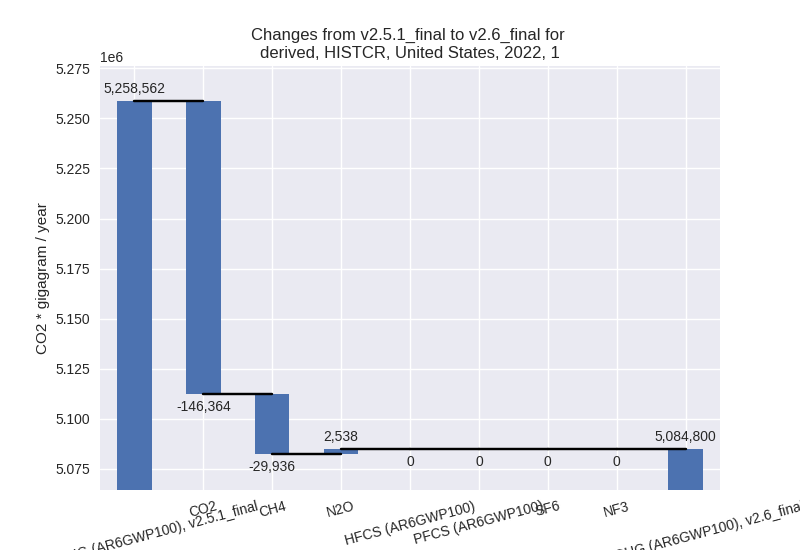
For 1990-2022 the changes per gas
are:
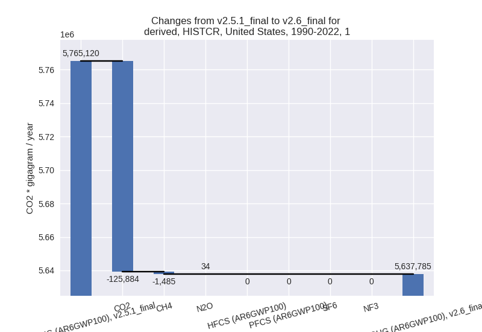
The changes come from the following subsectors:
- 1.A: Total sectoral emissions in 2022 are
4753424.00 Gg CO2 / year which is 93.5% of category 1 emissions. 2022
Emissions have changed by -3.0%
(-148226.10 Gg CO2 / year). 1990-2022 Emissions have changed by -2.4% (-126283.09 Gg CO2 / year). For 2022
the changes per gas
are:
For 1990-2022 the changes per gas
are:
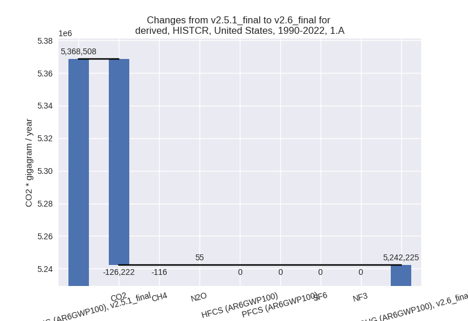
There is no subsector information available in PRIMAP-hist.
- 1.B.1: Total sectoral emissions in 2022 are
52219.70 Gg CO2 / year which is 1.0% of category 1 emissions. 2022
Emissions have changed by -5.2%
(-2869.79 Gg CO2 / year). 1990-2022 Emissions have changed by -0.1% (-113.43 Gg CO2 / year). For 2022
the changes per gas
are:
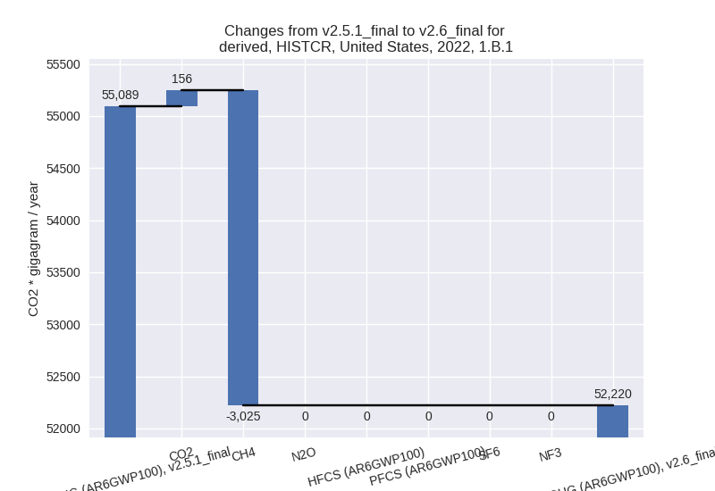
There is no subsector information available in PRIMAP-hist.
- 1.B.2: Total sectoral emissions in 2022 are
279155.90 Gg CO2 / year which is 5.5% of category 1 emissions. 2022
Emissions have changed by -7.5%
(-22665.98 Gg CO2 / year). 1990-2022 Emissions have changed by -0.3% (-938.18 Gg CO2 / year). For 2022
the changes per gas
are:
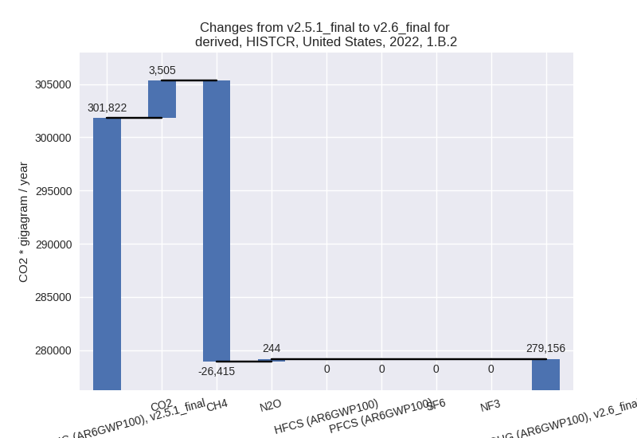
There is no subsector information available in PRIMAP-hist.
- 2: Total sectoral emissions in 2022 are 519136.81
Gg CO2 / year which is 8.1% of M.0.EL emissions. 2022 Emissions have
changed by 33.5% (130257.37 Gg CO2 /
year). 1990-2022 Emissions have changed by 37.3% (138690.74 Gg CO2 / year). For 2022
the changes per gas
are:
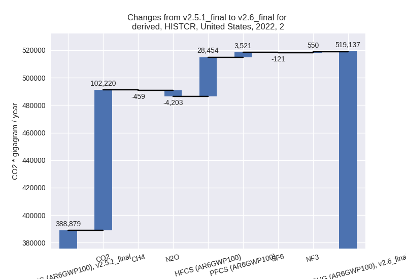
For 1990-2022 the changes per gas
are:
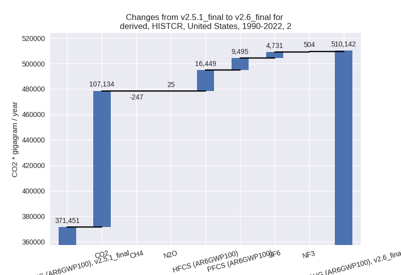
- M.AG: Total sectoral emissions in 2022 are
601640.40 Gg CO2 / year which is 9.4% of M.0.EL emissions. 2022
Emissions have changed by 0.8%
(4635.39 Gg CO2 / year). 1990-2022 Emissions have changed by 0.9% (5401.48 Gg CO2 / year).
- 4: Total sectoral emissions in 2022 are 167194.80
Gg CO2 / year which is 2.6% of M.0.EL emissions. 2022 Emissions have
changed by -2.1% (-3565.90 Gg CO2 /
year). 1990-2022 Emissions have changed by -0.1% (-158.92 Gg CO2 / year). For 2022
the changes per gas
are:
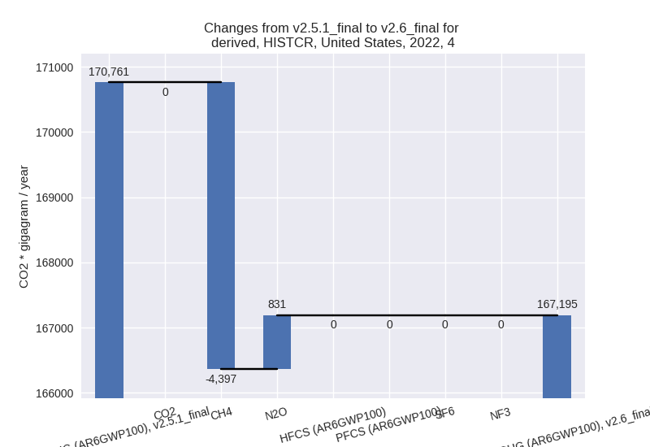
- 5: Total sectoral emissions in 2022 are 21238.55 Gg
CO2 / year which is 0.3% of M.0.EL emissions. 2022 Emissions have
changed by -10.6% (-2523.85 Gg CO2 /
year). 1990-2022 Emissions have changed by 12.5% (3259.31 Gg CO2 / year). For 2022
the changes per gas
are:
For 1990-2022 the changes per gas
are:
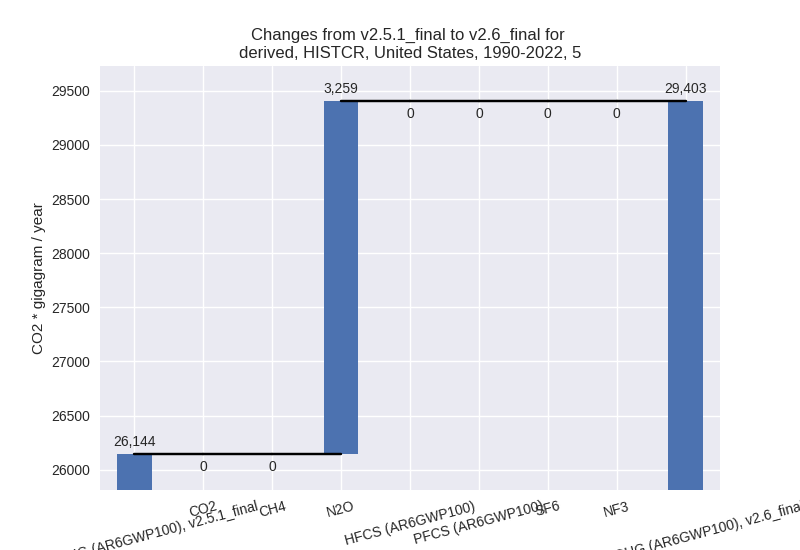
third party scenario (HISTTP):
Most important changes
per time frame
For 2022 the following sector-gas combinations have
the highest absolute impact on national total KyotoGHG (AR6GWP100)
emissions in 2022 (top 5):
- 1: 1.A, CO2 with -31737.90 Gg CO2 / year (-0.7%)
- 2: 2, HFCS (AR6GWP100) with 5360.35 Gg CO2 / year (3.0%)
- 3: 4, CH4 with 4099.64 Gg CO2 / year (2.9%)
- 4: 2, SF6 with -3423.25 Gg CO2 / year (-10.2%)
- 5: 5, N2O with -2523.85 Gg CO2 / year (-13.6%)
For 1990-2022 the following sector-gas combinations
have the highest absolute impact on national total KyotoGHG (AR6GWP100)
emissions in 1990-2022 (top 5):
- 1: 5, N2O with 3259.31 Gg CO2 / year (15.5%)
- 2: 1.A, CO2 with -1487.00 Gg CO2 / year (-0.0%)
- 3: 4, CH4 with 605.52 Gg CO2 / year (0.4%)
- 4: 2, HFCS (AR6GWP100) with 162.43 Gg CO2 / year (0.2%)
- 5: 2, N2O with 141.19 Gg CO2 / year (0.6%)
Changes in the main sectors for aggregate KyotoGHG (AR6GWP100)
are
- 1: Total sectoral emissions in 2022 are 5130962.60
Gg CO2 / year which is 84.6% of M.0.EL emissions. 2022 Emissions have
changed by -0.6% (-31703.60 Gg CO2 /
year). 1990-2022 Emissions have changed by -0.0% (-1494.55 Gg CO2 / year).
- 2: Total sectoral emissions in 2022 are 375862.38
Gg CO2 / year which is 6.2% of M.0.EL emissions. 2022 Emissions have
changed by 1.1% (3920.02 Gg CO2 /
year). 1990-2022 Emissions have changed by 0.6% (1708.25 Gg CO2 / year).
- M.AG: Total sectoral emissions in 2022 are
385989.02 Gg CO2 / year which is 6.4% of M.0.EL emissions. 2022
Emissions have changed by 0.0% (0.00
Gg CO2 / year). 1990-2022 Emissions have changed by 0.0% (0.00 Gg CO2 / year).
- 4: Total sectoral emissions in 2022 are 153020.10
Gg CO2 / year which is 2.5% of M.0.EL emissions. 2022 Emissions have
changed by 2.8% (4185.14 Gg CO2 /
year). 1990-2022 Emissions have changed by 0.4% (615.29 Gg CO2 / year). For 2022 the
changes per gas
are:
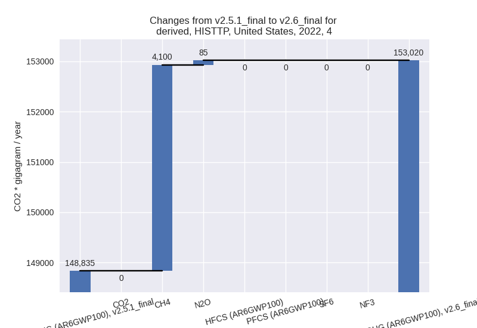
- 5: Total sectoral emissions in 2022 are 21238.55 Gg
CO2 / year which is 0.4% of M.0.EL emissions. 2022 Emissions have
changed by -10.6% (-2523.85 Gg CO2 /
year). 1990-2022 Emissions have changed by 12.5% (3259.31 Gg CO2 / year). For 2022
the changes per gas
are:
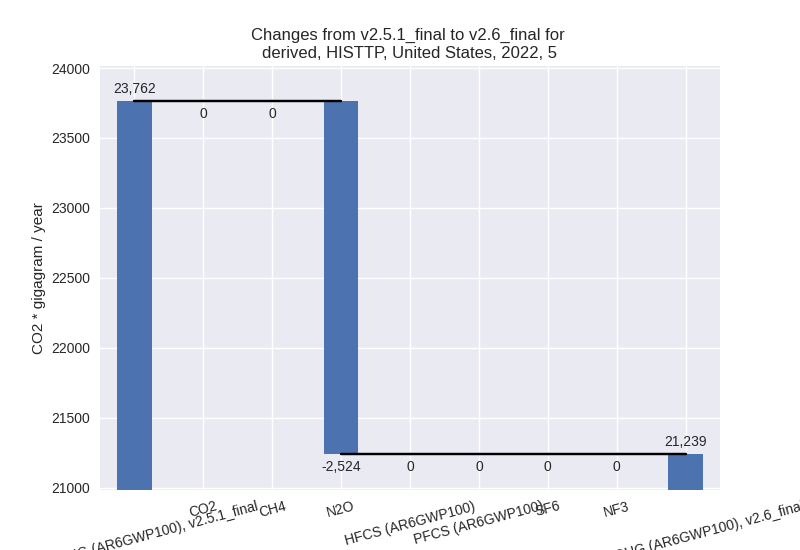
For 1990-2022 the changes per gas
are: